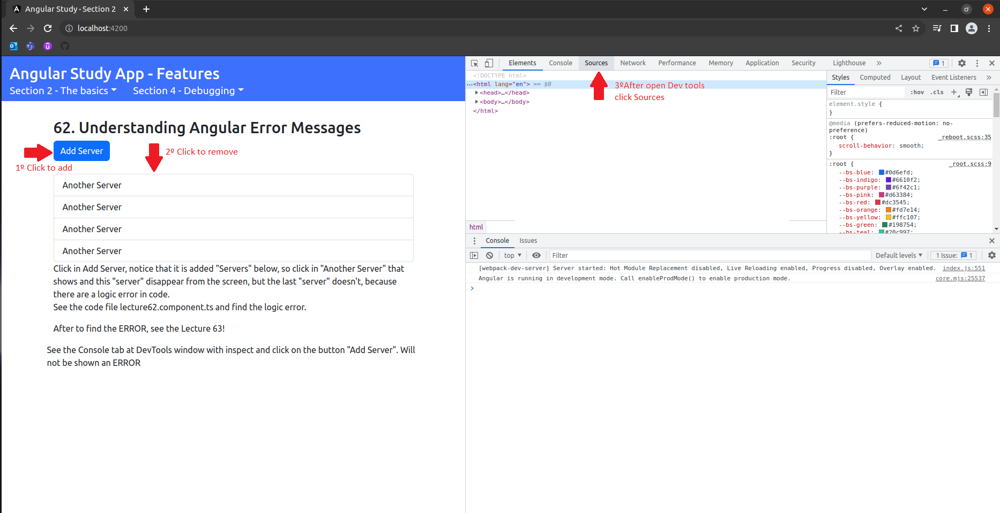
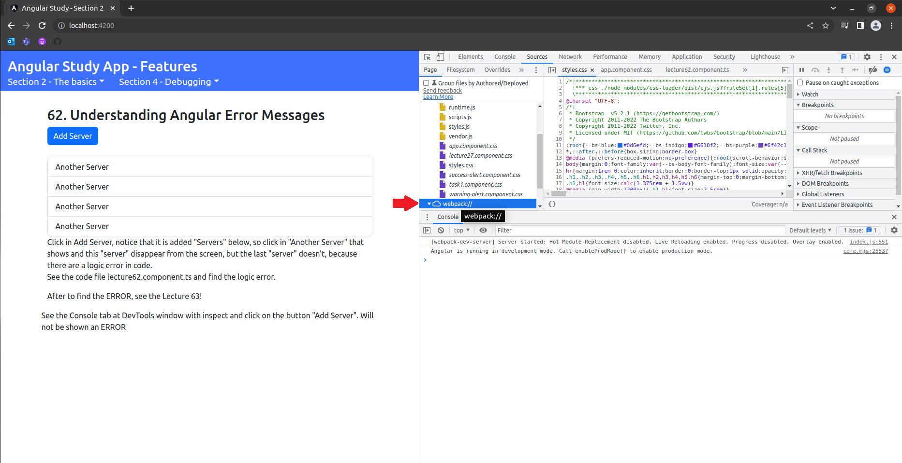
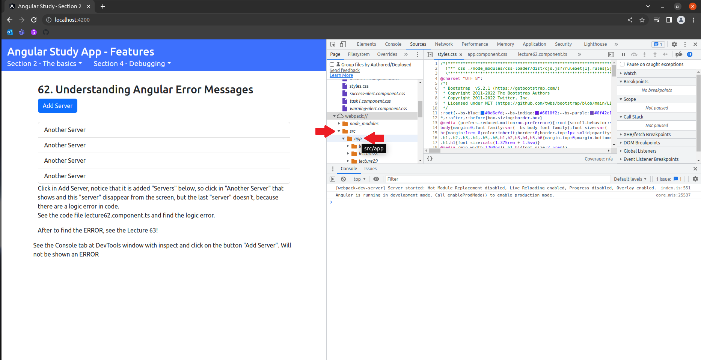
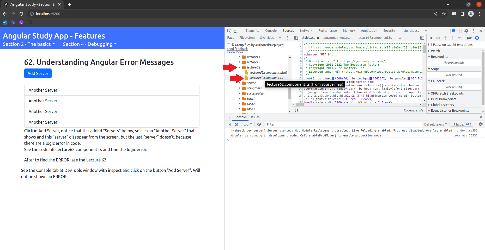
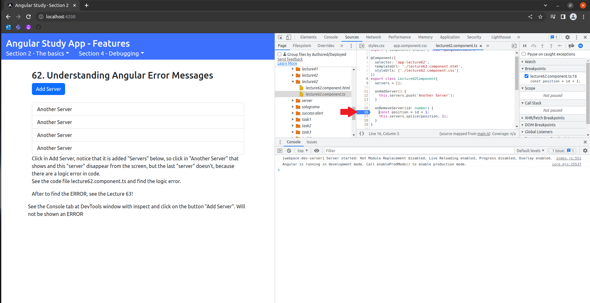
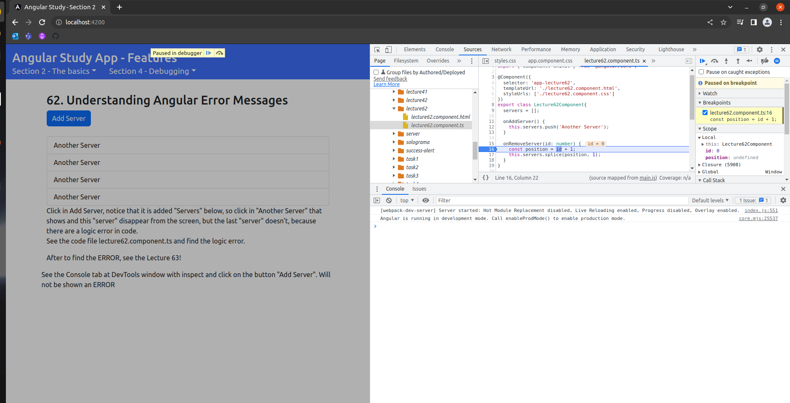
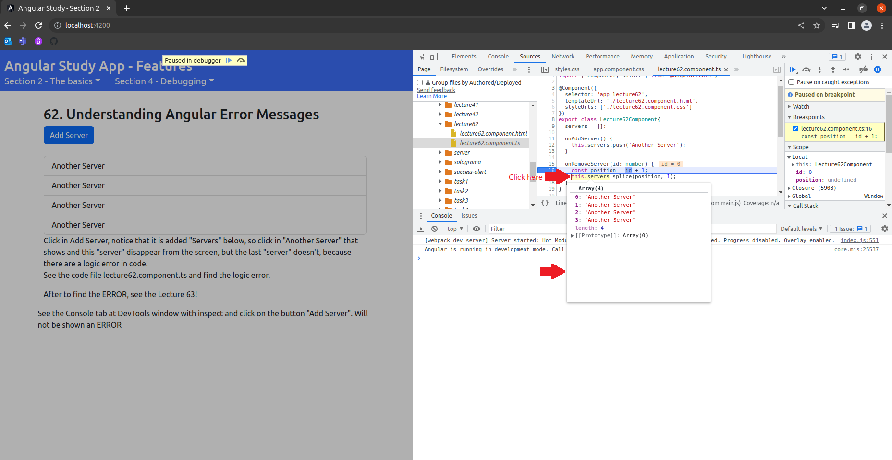

<div class="container">
  <div class="row">
    <div class="col-xs-12">
      <h2>63. Debugging Code in the Browser Using Sourcemaps</h2>
      <p>
        The logic always remove the id + 1, so never removes the last array item, because the position in array is not exist. <br>
        See the images below to understand the way to debug code by webpack.
      </p>
      <div class="images">
        <div class="carousel slide" id="carousel-1">
          <div class="carousel-inner">
            <div class="carousel-item active">
            </div>
            <div class="carousel-item"></div>
            <div class="carousel-item"></div>
            <div class="carousel-item"></div>
            <div class="carousel-item"></div>
            <div class="carousel-item"></div>
            <div class="carousel-item"></div>
          </div>
          <div><a class="carousel-control-prev" href="#carousel-1" role="button" data-bs-slide="prev"><span
                class="carousel-control-prev-icon"></span><span class="visually-hidden">Previous</span></a><a
              class="carousel-control-next" href="#carousel-1" role="button" data-bs-slide="next"><span
                class="carousel-control-next-icon"></span><span class="visually-hidden">Next</span></a></div>
          <ol class="carousel-indicators">
            <li data-bs-target="#carousel-1" data-bs-slide-to="0" class="active"></li>
            <li data-bs-target="#carousel-1" data-bs-slide-to="1"></li>
            <li data-bs-target="#carousel-1" data-bs-slide-to="2"></li>
            <li data-bs-target="#carousel-1" data-bs-slide-to="3"></li>
            <li data-bs-target="#carousel-1" data-bs-slide-to="4"></li>
            <li data-bs-target="#carousel-1" data-bs-slide-to="5"></li>
            <li data-bs-target="#carousel-1" data-bs-slide-to="6"></li>
          </ol>
        </div>
      </div>
    </div>
  </div>
</div>
